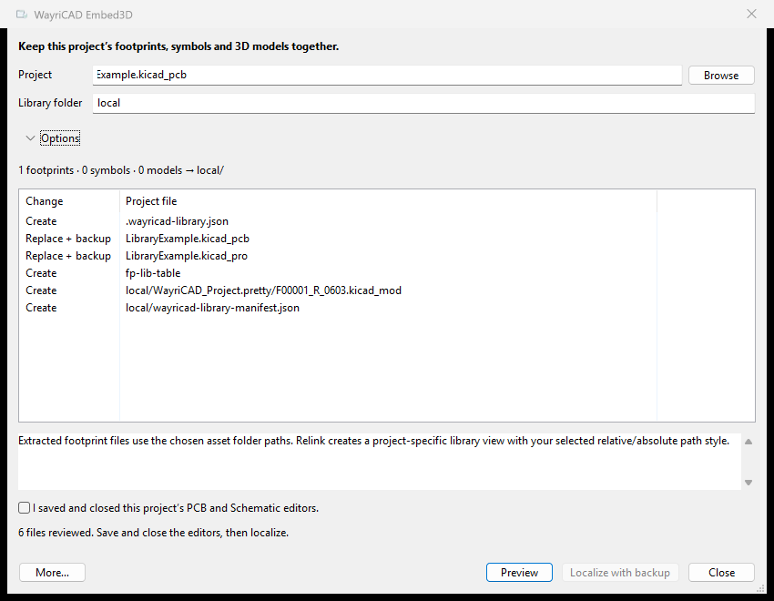

Scan, select and process saved design assets.
local/.Search only filters visible rows; it does not clear selections. Options & library tools retains other selective actions, path settings, diagnostics, and Localize entire project with backup. The full-project workflow updates saved project files after preview and requires the editors to be closed. Missing external model files require their source folder or explicit partial mode.

KiCad 10 native Python is required for footprint normalization and validation. KiCad 11 acceptance remains unverified.
| Operation | Result and review boundary |
|---|---|
| Scan | Read-only inventory of saved component assets and resolved paths. |
| Preview embed + relink | Proposes a new saved design copy containing the checked assets. Review before Apply preview. |
| Preview unwind | Extracts checked embedded assets to a unique local folder after Apply. It does not rewrite the source design. |
| Localize entire project with backup | Updates saved project links and local libraries after a separate preview. Save and close project editors first. |
Inspect the path for a selected component. Supply additional model roots when a relative or environment-variable path cannot be resolved. Explicit NAME=FOLDER variables must point to actual local folders. A checked 3D box includes all linked models on that component, not just the first one. Missing source files cannot be reconstructed.
wayricad-library localize-project board.kicad_pcb wayricad-library localize-project board.kicad_pcb --library-folder libraries/local --apply wayricad-library restore-local PROJECT/.wayricad-backups/BACKUP --apply
The first command previews only. Review unresolved assets before using --apply; partial mode is explicit and an unresolved-assets exit status is not a complete localization. Backups include hashes and restore protects later edits.
The localization scope does not collect arbitrary datasheets, SPICE models or unrelated top-level schematics. Keep those project resources separately.